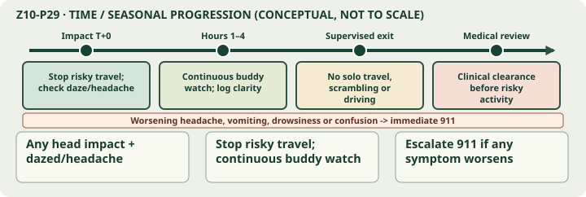

Z10-P29 · Wilderness medicine · New manuscript
Identify concussion symptoms and enforce strict stop-activity observation
Recognize mild traumatic brain injury after falls or head strikes and prevent dangerous second impacts.
When it applies · Any bump, blow, fall, or jarring impact to the head or body followed by subtle mental or physical changes.
Equipment · Written symptom-monitoring sheet, shade/shelter, and buddy watch.

Actions
- Stop physical travel, climbing, paddling, or hazardous tasks immediately after any head impact causing brief dazing, headache, dizziness, nausea, balance wobble, confusion, memory gaps, or sensitivity to light/noise—even without loss of consciousness.[M11]
- Keep a responsible companion observing the person continuously for worsening symptoms over the next several hours, logging mental clarity, speech, and headache trends on paper.[M11, M20]
- Never allow a person with suspected concussion to return to risky terrain, drive a vehicle, or travel alone; arrange supervised exit and medical clearance.[M11]
Failure recognition · Letting a hiker who "only saw stars for a second" after slipping on wet rock continue scrambling an exposed ridge alone.[M11]
Verify · Confirm hazardous activity stopped immediately, a buddy is watching continuously, and baseline orientation questions are recorded with times.[M11, M20]
Stop or change course · Any worsening headache, vomiting, drowsiness, confusion, or balance decline transitions immediately to urgent 911 head-trauma evacuation.[M11, T02]
Evidence and editorial notes
- M11 · NIH / MedlinePlus · Head Injuries (current web edition)
- Section: Head Injury, Concussion Signs, and Spinal Precautions · Conditions: Falls, struck-by-branch trauma, or head impact with confusion, vomiting, worsening headache, or neck pain
Support: Assume possible head or spinal injury after significant impact; keep the head and neck still, monitor level of responsiveness, call EMS for red flags (loss of consciousness, repeated vomiting, unequal pupils, confusion, neck pain), and never resume hazardous travel.
Limitations: Delayed intracranial bleeding can worsen hours after an initially mild-seeming impact. · Conflicting evidence: None; mandates conservative evacuation for any neurologic red flag.
Editorial note: Grounds head-trauma, concussion, and spinal-motion-restriction cards. · Specialist reviewer: Neurotrauma and wilderness EMS
Primary source · checked 2026-11-24 - M20 · NIH / MedlinePlus · First Aid Overview (current web edition)
- Section: Lay First-Aid Scope, Kit Readiness, and Documentation · Conditions: Pre-trip kit preparation and remote patient monitoring
Support: Maintain an inspected, unexpired first-aid kit matched to your actual training, keep written patient observations (time, responsiveness, breathing, symptoms, interventions) for EMS handoff, and practice skills in certified courses.
Limitations: Carrying advanced medical instruments without clinical training adds risk rather than capability. · Conflicting evidence: None; aligns with ARC and NPS-K.
Editorial note: Anchors kit sizing, SOAP-style lay observation logs, and scope-of-practice cards. · Specialist reviewer: Wilderness EMS and clinical education
Primary source · checked 2026-11-24 - T02 · American Red Cross · First Aid Steps (current web edition)
- Section: First Aid Steps > Call 9-1-1 · Conditions: Lay emergency response to unresponsiveness, abnormal breathing or severe bleeding
Support: Activate EMS and get needed equipment. Follow dispatcher directions and act within training.
Limitations: Remote locations may delay EMS arrival, requiring sustained stabilization after activation. · Conflicting evidence: None; aligns with NPS-E.
Editorial note: Mandates early emergency activation and dispatcher adherence. · Specialist reviewer: EMS and wilderness medicine
Primary source · checked 2026-11-24
Source lineage · NIH MedlinePlus Head Injuries; new manuscript · Classification · New manuscript.